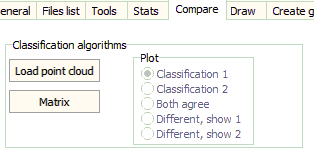

Compare Point Clouds
Tab of
LIDAR point cloud analysis
.

Classification algorithms
Load point cloud into memory: loads the point cloud, and includes the classification from the second point cloud.
This can be used for
Plot:
how to color for plotting the point cloud with the two classifications.
This should be very fast, and immediately redraws.
Slice
will use the same coloring scheme.
Matrix
: creates matrix showing how points classify in the two schemes.
Last revision 7/16/2015